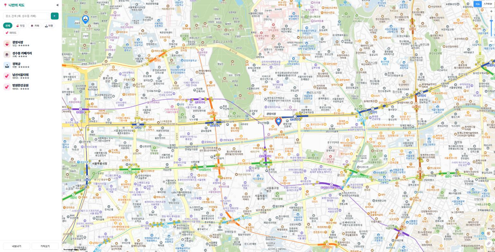
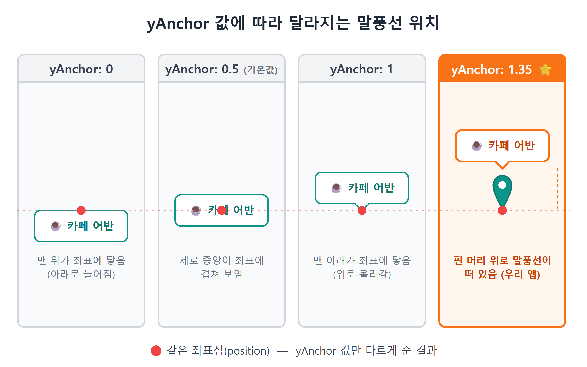
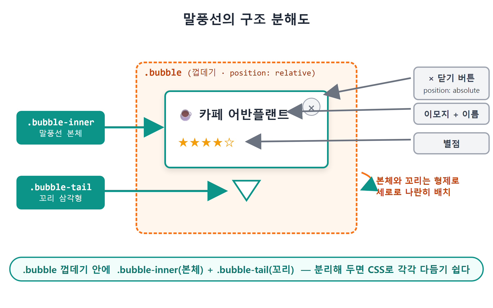
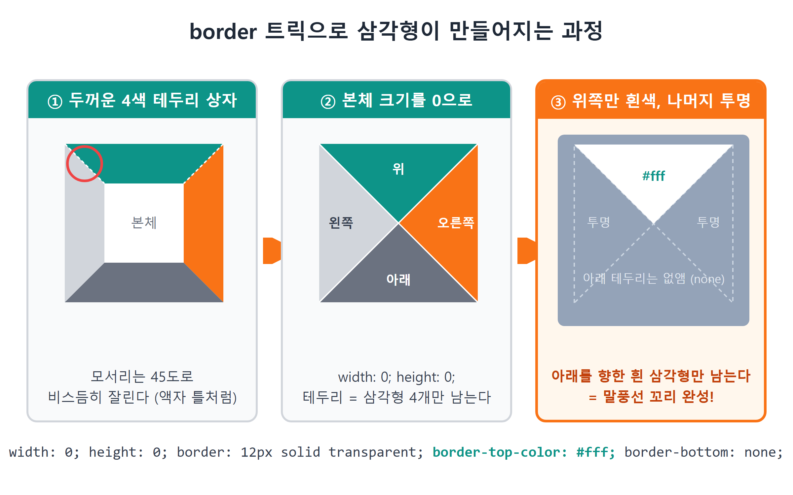
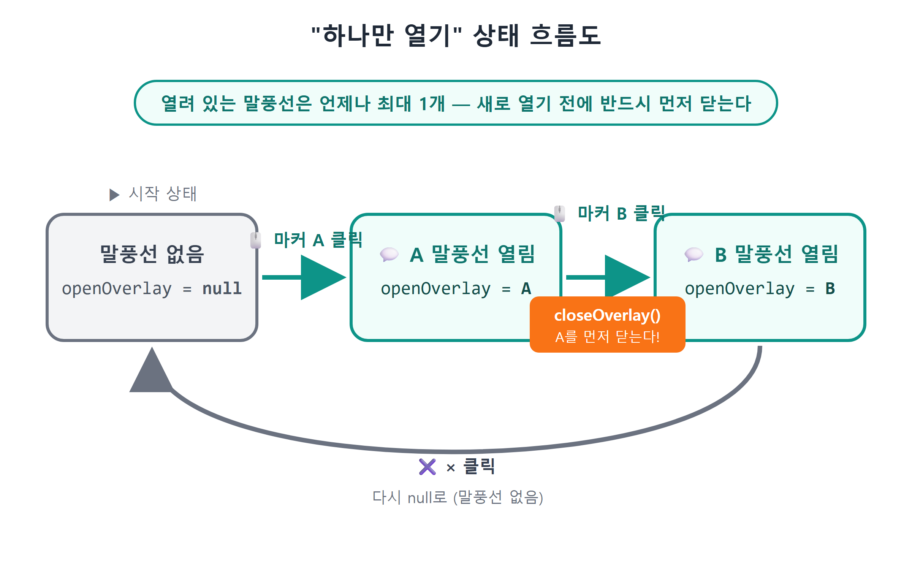
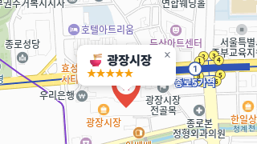

13장 커스텀 오버레이 말풍선¶
이 장에서 배우는 것
- 카카오지도가 기본 제공하는 InfoWindow를 써 보고, 왜 금방 한계에 부딪히는지 확인합니다
- CustomOverlay로 HTML/CSS 말풍선을 지도 위에 띄우는 방법을 배웁니다
- yAnchor로 말풍선을 마커 머리 위에 정확히 올려놓는 원리를 이해합니다
- "말풍선은 한 번에 하나만" — openOverlay 변수 하나로 열고 닫기 상태를 관리합니다
- CSS border 트릭으로 말풍선 꼬리(삼각형)를 그립니다
12장에서 우리는 장소 데이터를 설계하고, 데이터 배열을 돌면서 마커를 찍는 renderPlaces 함수를 만들었습니다. 지도 위에 알록달록한 카테고리 핀이 늘어선 모습, 꽤 그럴듯했죠. 그런데 지금 마커를 클릭해 보면 어떻게 되나요? 아무 일도 일어나지 않습니다. 마커는 "여기에 뭔가 있다"고 위치만 알려줄 뿐, 그게 무엇인지는 말해 주지 않습니다.
카카오맵 앱을 떠올려 보세요. 지도에서 가게 핀을 누르면 가게 이름과 별점이 적힌 작은 말풍선이 뿅 하고 떠오릅니다. 이번 장에서 우리가 만들 것이 바로 그 말풍선입니다. 마커를 클릭하면 장소 이름, 카테고리 이모지, 별점이 담긴 말풍선이 마커 머리 위에 나타나고, × 버튼이나 다른 마커를 누르면 닫히는 것. 말로 하면 간단하지만, 그 안에는 "지도 위에 HTML을 올린다"는 새로운 개념과 "상태를 하나로 관리한다"는 중요한 설계 습관이 숨어 있습니다.
이번 장도 물론 바이브코딩입니다. 코드를 외울 필요는 없습니다. 다만 AI가 만들어 준 코드를 함께 읽으면서 왜 이렇게 생겼는지는 이해하고 넘어갑시다. 그 이해가 다음 프롬프트의 질을 결정하니까요.
13.1 일단 기본 도구부터 — InfoWindow 써 보기¶
카카오지도 SDK에는 말풍선 전용 부품이 이미 들어 있습니다. 이름은 InfoWindow(인포윈도우)입니다. 새 도구를 만나면 일단 기본 제공품부터 써 보는 것이 순서죠. Claude Code에게 이렇게 시켜 봅시다.
🗣 이렇게 시키세요
마커를 클릭하면 장소 이름이 적힌 말풍선이 뜨게 해줘. 카카오지도 기본 InfoWindow를 써서 가장 간단하게.
Claude Code가 만들어 주는 코드는 대략 이런 모양입니다.
const infowindow = new kakao.maps.InfoWindow({
content: `<div style="padding:5px;">${place.name}</div>`,
});
kakao.maps.event.addListener(marker, 'click', () => {
infowindow.open(map, marker);
});
InfoWindow 객체를 만들 때 content에 HTML 문자열을 넣고, 마커 클릭 이벤트에서 open(지도, 마커)를 부르면 끝입니다. 저장하고 브라우저에서 마커를 눌러 보세요. 정말로 말풍선이 뜹니다. 3분 만에 성공입니다.

그림 13.1 — 기본 InfoWindow가 열린 모습
그런데 화면을 가만히 보면 뭔가 아쉽습니다. 말풍선의 테두리, 배경, 꼬리 모양이 전부 카카오가 정해 둔 그대로입니다. 모서리를 더 둥글게 하고 싶고, 그림자를 넣고 싶고, 별점을 노란색으로 예쁘게 찍고 싶고, 닫기 버튼도 우리 앱 분위기에 맞추고 싶은데 — InfoWindow는 내용물(content)만 바꿀 수 있을 뿐, 바깥 껍데기는 손댈 수 없습니다. 껍데기 스타일이 SDK 내부에 굳어 있기 때문입니다.
비유하자면 InfoWindow는 편의점 도시락입니다. 반찬(내용물)은 조금 고를 수 있지만 도시락 용기 모양은 정해져 있죠. 우리가 원하는 것은 그릇부터 직접 고르는 요리입니다. 그래서 카카오지도 SDK는 도시락 옆에 빈 그릇도 함께 팝니다. 그 빈 그릇의 이름이 CustomOverlay(커스텀 오버레이)입니다.
💡 팁
InfoWindow가 나쁜 부품이라는 뜻은 아닙니다. "위치와 이름만 빠르게 보여주면 충분한" 관리자 도구나 시제품에서는 InfoWindow가 훨씬 경제적입니다. 디자인을 우리 마음대로 해야 할 때 CustomOverlay로 갈아타는 것뿐입니다. 도구 선택의 기준은 언제나 "지금 무엇이 필요한가"입니다.
13.2 CustomOverlay — 지도 위에 HTML을 올린다¶
CustomOverlay의 개념은 한 문장입니다. "내가 만든 HTML 요소를, 지도 위의 특정 위경도 좌표에 붙여 둔다."
일반 웹페이지에서 HTML 요소의 위치는 픽셀로 정합니다. 왼쪽에서 100px, 위에서 50px 하는 식이죠. 그런데 CustomOverlay는 위치를 위경도로 정합니다. "위도 37.5665, 경도 126.978에 이 div를 붙여 놔"라고 선언하면, 그다음은 지도가 알아서 합니다. 지도를 드래그하면 말풍선도 함께 움직이고, 확대·축소해도 정확히 그 좌표 위에 붙어 있습니다. 픽셀 계산은 전부 SDK가 대신해 주는 겁니다.
만드는 법은 InfoWindow와 크게 다르지 않습니다.
const overlay = new kakao.maps.CustomOverlay({
content: el, // 우리가 만든 HTML 요소 (또는 HTML 문자열)
position: pos, // kakao.maps.LatLng — 붙어 있을 위경도
yAnchor: 1.35, // 세로 기준점 (곧 설명합니다)
zIndex: 10, // 다른 오버레이보다 위에 그리기
clickable: true, // 오버레이 클릭이 지도 클릭으로 번지지 않게
});
overlay.setMap(map); // 지도에 표시
overlay.setMap(null); // 지도에서 제거
여기서 처음 보는 낯선 녀석이 하나 있습니다. yAnchor입니다.
yAnchor — 말풍선의 "기준점" 정하기¶
CustomOverlay에 position으로 좌표를 주면, 오버레이의 어느 부분이 그 좌표에 닿아야 할까요? 가운데? 아래 끝? 이걸 정하는 값이 yAnchor(세로 기준점)입니다.
yAnchor: 0— 오버레이의 맨 위가 좌표에 닿습니다. 오버레이가 좌표 아래로 늘어집니다.yAnchor: 0.5— 오버레이의 세로 중앙이 좌표에 옵니다. (기본값)yAnchor: 1— 오버레이의 맨 아래가 좌표에 닿습니다. 오버레이가 좌표 위로 올라갑니다.

그림 13.2 — yAnchor 값에 따라 달라지는 말풍선 위치
그런데 우리 앱의 코드를 보면 yAnchor: 1.35입니다. 1을 넘는 값이라니, 이상하지 않나요? 규칙을 그대로 연장하면 됩니다. 1이 "맨 아래가 좌표에 닿는" 상태이니, 1.35는 거기서 오버레이 높이의 35%만큼 더 위로 밀어 올린 상태입니다.
왜 더 올릴까요? 좌표 위에는 이미 마커 핀이 서 있기 때문입니다. 11장에서 만든 우리의 SVG 핀은 높이가 46px이고, 핀의 뾰족한 발끝이 정확히 좌표를 딛고 서 있습니다. yAnchor: 1로 하면 말풍선의 밑변이 좌표에 닿아 버려서 핀과 말풍선이 겹칩니다. 그래서 35%만큼 여유를 줘서 말풍선을 핀 머리 위로 띄운 겁니다. 이 숫자는 물리 법칙이 아니라 디자인 조정값입니다. 여러분의 핀 크기가 다르면 1.2도, 1.5도 될 수 있습니다. "숫자를 바꿔 가며 눈으로 맞춘다"가 정답인 종류의 값입니다.
💡 팁
가로 방향 기준점인 xAnchor도 있습니다(0 왼쪽 끝, 0.5 중앙, 1 오른쪽 끝). 우리 말풍선은 마커 정중앙 위에 두면 되므로 기본값 0.5를 그대로 쓰고, 코드에도 적지 않았습니다. 기본값과 같은 옵션은 생략하는 것이 읽기 좋은 코드의 습관입니다.
13.3 말풍선 HTML 만들기 — overlayContent¶
개념을 잡았으니 이제 시킬 차례입니다. 우리가 원하는 말풍선의 모습을 구체적으로 묘사해서 프롬프트를 만들어 봅시다. 4장에서 배운 프롬프트 4요소(맥락·목표·제약·출력)를 기억하시죠?
🗣 이렇게 시키세요
InfoWindow 대신 CustomOverlay로 말풍선을 바꾸고 싶어. mapView.js에 말풍선 HTML을 만드는 함수를 추가해줘. 말풍선에는 카테고리 이모지 + 장소 이름, 별점(★☆ 5개), 오른쪽 위 × 닫기 버튼을 넣어줘. 스타일은 style.css에 .bubble 클래스로: 흰 배경, 둥근 모서리, 그림자, 아래쪽 가운데에 꼬리 삼각형. 장소 이름은 나중에 사용자가 입력할 수도 있으니 HTML 이스케이프 처리해줘.
Claude Code가 mapView.js에 만들어 준 함수를 함께 읽어 봅시다.
function overlayContent(place) {
const cat = categoryOf(place.category);
const stars = '★'.repeat(place.rating || 0) + '☆'.repeat(5 - (place.rating || 0));
const el = document.createElement('div');
el.className = 'bubble';
el.innerHTML = `
<div class="bubble-inner">
<strong>${cat.emoji} ${escapeHtml(place.name)}</strong>
<span class="bubble-stars">${stars}</span>
<button class="bubble-close" title="닫기">×</button>
</div>
<div class="bubble-tail"></div>`;
return el;
}
export function escapeHtml(s = '') {
return s.replace(/[&<>"']/g, (c) => ({
'&': '&', '<': '<', '>': '>', '"': '"', "'": ''',
})[c]);
}
한 줄씩 뜯어 봅시다.
별점 문자열 만들기 — '★'.repeat(3)은 "★★★"를 만듭니다. 별점이 3점이면 채운 별 3개 + 빈 별 2개, 그래서 '☆'.repeat(5 - 3)을 뒤에 이어 붙입니다. place.rating || 0은 "rating이 없으면 0으로 치라"는 안전장치입니다. 별점을 아직 안 매긴 장소도 빈 별 5개로 깔끔하게 표시됩니다.
요소 만들기 — document.createElement('div')로 진짜 DOM 요소를 만들고 innerHTML로 속을 채웁니다. CustomOverlay의 content에는 HTML 문자열을 바로 줄 수도 있지만, 요소로 만들어 두면 그 안의 버튼에 클릭 이벤트를 달 수 있다는 결정적 장점이 있습니다. × 닫기 버튼이 실제로 동작하려면 이 방식이어야 합니다. 13.5절에서 확인하게 됩니다.
구조 — 말풍선 본체(bubble-inner)와 꼬리(bubble-tail)를 형제로 나란히 두고, 둘을 bubble이라는 껍데기로 감쌌습니다. 본체와 꼬리를 분리해 두면 CSS로 각각 다듬기 쉽습니다.
escapeHtml — 잠깐, 이건 왜 필요할까요? innerHTML은 문자열을 HTML로 해석합니다. 만약 장소 이름에 <img src=x onerror=...> 같은 문자열이 들어 있다면, 이름을 표시하려던 것뿐인데 브라우저가 그걸 태그로 해석해서 코드가 실행될 수 있습니다. 지금은 우리가 만든 데이터라 괜찮지만, 16장부터는 사용자가 장소 이름을 직접 입력합니다. escapeHtml은 <를 <처럼 "그냥 글자"로 바꿔서 이런 사고를 막는 함수입니다. 이 주제(XSS1)는 19장에서 제대로 다시 다룹니다. 지금은 "사용자가 입력한 문자열을 innerHTML에 넣을 땐 반드시 이스케이프"라는 규칙만 기억해 두세요.

그림 13.3 — 말풍선의 구조 분해도
13.4 꼬리 삼각형 — CSS border 트릭¶
말풍선에서 가장 재미있는 부분은 꼬리입니다. Claude Code가 style.css에 추가해 준 스타일을 봅시다.
/* ── 말풍선(커스텀 오버레이) ───────────── */
.bubble { position: relative; }
.bubble-inner {
background: #fff; border-radius: 10px; padding: 8px 30px 8px 12px;
box-shadow: 0 2px 10px rgb(0 0 0 / 0.2);
display: flex; flex-direction: column; cursor: pointer; white-space: nowrap;
}
.bubble-stars { color: #f59e0b; font-size: 12px; }
.bubble-close {
position: absolute; top: 4px; right: 6px; border: none; background: none;
cursor: pointer; color: var(--muted); font-size: 15px;
}
.bubble-tail {
width: 0; height: 0; margin: 0 auto;
border: 8px solid transparent; border-top-color: #fff; border-bottom: none;
}
bubble-inner는 익숙한 속성들입니다. 흰 배경, 둥근 모서리 10px, 은은한 그림자, 이름이 길어도 줄바꿈되지 않게 white-space: nowrap. 오른쪽 패딩만 30px로 넉넉한 이유는 그 자리에 × 버튼이 position: absolute로 떠 있기 때문입니다. 껍데기 .bubble에 position: relative를 준 것도 이 버튼의 기준 좌표를 만들기 위해서입니다.
진짜 마술은 bubble-tail입니다. 가로세로가 0인데 어떻게 삼각형이 보일까요?
비밀은 테두리(border)가 만나는 모서리에 있습니다. CSS에서 두꺼운 테두리를 가진 상자를 그리면, 위 테두리와 옆 테두리가 만나는 모서리는 45도로 비스듬히 잘립니다. 액자 틀의 모서리가 대각선으로 이어 붙는 것과 같습니다. 이제 상자의 본체 크기를 0으로 줄이면 남는 것은 테두리뿐이고, 각 방향의 테두리는 삼각형 4개가 됩니다. 여기서 위쪽 테두리만 흰색(border-top-color: #fff)으로 칠하고 나머지는 투명(transparent)으로 두면 — 아래를 향한 흰 삼각형만 남습니다. 아래쪽 테두리는 아예 없애서(border-bottom: none) 삼각형 밑에 투명한 여백이 생기지 않게 했습니다. margin: 0 auto는 이 삼각형을 말풍선 가로 중앙에 정렬합니다.

그림 13.4 — border 트릭으로 삼각형이 만들어지는 과정
이 트릭은 지도 말풍선만이 아니라 툴팁, 드롭다운 화살표 등 웹 어디서나 쓰이는 고전 기법입니다. 원리를 한 번 이해해 두면 다른 사람의 CSS를 읽다가 width: 0; height: 0; border: ...가 나왔을 때 "아, 삼각형이구나" 하고 바로 알아볼 수 있습니다.
⚠️ 주의
말풍선이 마커와 어긋나 보인다면 대부분 yAnchor와 CSS의 합이 안 맞는 경우입니다. 말풍선의 padding이나 글자 크기를 바꾸면 말풍선 전체 높이가 달라지고, 그러면 yAnchor 1.35가 만들던 간격도 달라집니다. 디자인을 수정한 뒤에는 꼭 브라우저에서 마커와 말풍선 사이 간격을 눈으로 확인하세요.
13.5 하나만 열기 — openOverlay 상태 관리¶
이제 말풍선을 마커 클릭에 연결할 차례입니다. 그 전에 잠깐, 설계 결정을 하나 해야 합니다. 마커 A의 말풍선이 열려 있는데 마커 B를 클릭하면 어떻게 돼야 할까요?
아무 처리도 하지 않으면 말풍선이 두 개, 세 개, 계속 쌓입니다. 장소가 스무 개라면 화면이 말풍선 벽지가 될 수도 있습니다. 카카오맵을 비롯한 대부분의 지도 앱은 "말풍선은 한 번에 하나만" 규칙을 씁니다. 새 것을 열기 전에 이전 것을 닫는 거죠. 우리도 그렇게 갑니다.
🗣 이렇게 시키세요
마커를 클릭하면 그 마커의 말풍선이 열리게 해줘. 단, 말풍선은 화면에 항상 하나만 있어야 해. 다른 마커를 클릭하면 이전 말풍선은 닫히고 새 말풍선이 열려. × 버튼을 누르면 그냥 닫혀.
Claude Code가 만들어 준 코드입니다. 먼저 "지금 열려 있는 말풍선"을 기억하는 부분부터.
let openOverlay = null; // 지금 열려 있는 말풍선 (없으면 null)
export function closeOverlay() {
if (openOverlay) {
openOverlay.setMap(null); // 지도에서 떼어낸다
openOverlay = null;
}
}
핵심은 openOverlay라는 변수 하나입니다. 말풍선이 닫혀 있으면 null, 열려 있으면 그 오버레이 객체가 들어 있습니다. closeOverlay()는 "열린 게 있으면 지도에서 떼고, 기억을 비운다"는 두 줄짜리 함수입니다. 이렇게 현재 상태를 변수 하나에 담고, 상태를 바꾸는 통로를 함수 하나로 좁히는 것이 상태 관리의 기본기입니다. 앞으로 14장의 필터(currentFilter), 17장의 저장(save)에서도 똑같은 패턴을 다시 만나게 됩니다.
이제 12장의 renderPlaces에 오버레이를 심습니다. 마커를 만드는 반복문 안에 다음이 추가됐습니다.
export function renderPlaces(places) {
closeOverlay(); // 다시 그리기 전에 열린 말풍선부터 정리
markers.forEach((m) => m.marker.setMap(null));
markers = [];
for (const place of places) {
const pos = new kakao.maps.LatLng(place.lat, place.lng);
const marker = new kakao.maps.Marker({
position: pos,
image: markerImageFor(place.category),
title: place.name,
});
marker.setMap(map);
// ── 이번 장의 주인공: 말풍선 오버레이 ──
const el = overlayContent(place);
const overlay = new kakao.maps.CustomOverlay({
content: el,
position: pos,
yAnchor: 1.35,
zIndex: 10,
clickable: true, // 말풍선 클릭이 지도 클릭(장소 추가)으로 번지지 않게
});
el.querySelector('.bubble-close').addEventListener('click', (e) => {
e.stopPropagation();
closeOverlay();
});
kakao.maps.event.addListener(marker, 'click', () => {
closeOverlay(); // ① 이전 말풍선 닫기
overlay.setMap(map); // ② 이 말풍선 열기
openOverlay = overlay; // ③ "지금 열린 건 이거"라고 기억
});
markers.push({ marker, overlay, place });
}
}
읽어 봅시다. 흐름이 아주 논리적입니다.
만들어 두되, 열지는 않는다 — 장소마다 오버레이를 미리 만들어 markers 배열에 마커와 함께 짝지어 보관합니다. 하지만 overlay.setMap(map)은 아직 부르지 않으므로 화면에는 보이지 않습니다. 클릭되는 순간에만 붙이는 거죠.
마커 클릭 = 닫고, 열고, 기억하기 — 클릭 리스너의 세 줄이 이 장의 심장입니다. 어떤 마커를 눌러도 ① 먼저 closeOverlay()로 기존 말풍선을 닫고 ② 자기 말풍선을 열고 ③ openOverlay에 자신을 기록합니다. 이 순서 덕분에 말풍선은 절대 두 개가 될 수 없습니다. 같은 마커를 연달아 눌러도 "닫았다 다시 여는" 것이라 문제가 없습니다.
× 버튼과 stopPropagation — 13.3절에서 content를 DOM 요소로 만든 보람이 여기서 나옵니다. el.querySelector('.bubble-close')로 말풍선 안의 × 버튼을 찾아 클릭 이벤트를 달 수 있으니까요. 그런데 e.stopPropagation()은 뭘까요? 브라우저에서 클릭 이벤트는 눌린 요소에서 부모로 거품처럼 번져 올라갑니다(버블링). ×를 눌렀는데 이벤트가 말풍선 본체까지 번지면, 나중에 말풍선 클릭에 다른 동작(18~19장에서 상세 패널 열기를 답니다)을 달았을 때 "닫으려고 눌렀는데 상세가 열리는" 황당한 일이 생깁니다. stopPropagation()은 "이 클릭은 여기서 끝, 위로 번지지 마"라는 선언입니다.
clickable: true — 오버레이 옵션에 붙은 이 한 줄도 같은 계열의 방어입니다. stopPropagation이 말풍선 안에서의 번짐을 막는다면, clickable: true는 말풍선 클릭이 지도 자체의 click 이벤트로 번지는 것을 SDK 차원에서 막아 줍니다. 16장에서 "지도 클릭 = 장소 추가"를 달고 나면 이 옵션의 진가가 드러나는데, 없을 경우 말풍선을 누를 때마다 장소 추가 다이얼로그가 튀어나오는 황당한 사고가 납니다.
renderPlaces 첫 줄의 closeOverlay() — 목록을 다시 그릴 때는 기존 마커와 오버레이를 전부 버리고 새로 만듭니다. 그런데 열려 있던 말풍선을 안 닫고 버리면, 화면에는 붙어 있는데 아무도 기억하지 못하는 "유령 말풍선"이 남습니다. 그래서 다시 그리기 전에 반드시 먼저 닫습니다. 14장에서 필터 버튼을 누를 때마다 renderPlaces가 다시 불리게 되는데, 이 한 줄이 그때 진가를 발휘합니다.

그림 13.5 — "하나만 열기" 상태 흐름도
💡 팁
실제 앱의 mapView.js를 열어 보면 renderPlaces가 clusterer.addMarkers(...)를 쓰고, 마커 클릭 시 onMarkerClick(place.id)도 함께 부릅니다. 각각 22장(마커 클러스터러)과 19장(상세 패널)에서 배우는 내용이라 이 장의 코드에서는 marker.setMap(map)으로 단순화했습니다. 책의 진도에 따라 같은 함수가 점점 자라나는 과정 자체가 실전 개발의 모습입니다.
13.6 실행 확인¶
이제 브라우저로 갑시다. npm run dev가 돌고 있는 상태에서 저장하면 Vite가 자동으로 새로고침해 줍니다. 확인할 것은 네 가지입니다.
- 마커 클릭 — 말풍선이 마커 머리 위에 뜨나요? 이모지, 이름, 노란 별점이 보이나요?
- 다른 마커 클릭 — 이전 말풍선이 닫히고 새 말풍선만 남나요? 여러 마커를 빠르게 눌러도 말풍선은 항상 하나뿐인가요?
- × 버튼 — 말풍선이 닫히나요?
- 지도 드래그·확대 — 말풍선이 마커에 딱 붙어 함께 움직이나요?

그림 13.6 — 완성된 커스텀 말풍선
네 가지가 모두 통과라면 축하합니다. InfoWindow로는 흉내 낼 수 없는, 우리 앱만의 말풍선이 완성됐습니다. 혹시 말풍선이 마커 뒤에 숨는다면 zIndex를, 위치가 어긋난다면 yAnchor를 의심하세요. 그리고 이런 미세 조정이야말로 바이브코딩이 빛나는 순간입니다. "말풍선이 핀에 살짝 겹쳐 보여. yAnchor를 조금씩 바꿔 가면서 안 겹치는 값을 찾아줘"라고 시키면 됩니다.
13.7 마무리¶
📌 핵심 요약
- InfoWindow는 빠르지만 껍데기 스타일을 바꿀 수 없습니다. 디자인이 필요하면 CustomOverlay를 씁니다.
- CustomOverlay는 우리가 만든 HTML 요소를 위경도 좌표에 붙이는 부품입니다.
setMap(map)으로 열고setMap(null)로 닫습니다. yAnchor는 오버레이의 세로 기준점입니다. 1이면 밑변이 좌표에 닿고, 1.35처럼 1보다 크면 마커 높이만큼 위로 떠오릅니다.- "말풍선은 하나만" 규칙은
openOverlay변수 하나 +closeOverlay()함수 하나로 구현합니다. 새로 열기 전에 항상 먼저 닫습니다. - 말풍선 꼬리는 크기 0짜리 상자의 border 트릭으로 그립니다. 위쪽 테두리만 색을 칠하면 아래를 향한 삼각형이 남습니다.
- 클릭 번짐은 두 겹으로 막습니다. 말풍선 안에서는
stopPropagation, 말풍선 → 지도 방향은 CustomOverlay의clickable: true옵션입니다. - 사용자 입력이 들어갈 수 있는 문자열을
innerHTML에 넣을 때는 escapeHtml로 이스케이프합니다(자세한 이야기는 19장에서).
🤔 생각해보기
Q1. 말풍선을 "한 번에 하나만" 열기로 한 이유는 무엇이었나요? 만약 여러 개를 동시에 열 수 있게 만든다면 어떤 점이 좋아지고 어떤 점이 불편해질까요?
✍️ ________
✍️ ________
Q2. yAnchor: 1.35에서 1.35라는 숫자는 어떻게 정해졌을까요? 우리 앱에서 이 값을 바꿔야 하는 상황은 언제일까요?
✍️ ________
✍️ ________
✏️ 연습 문제
- Claude Code에게 시켜서 말풍선 배경을 흰색 대신 연한 노란색(
#fffbe6)으로 바꿔 보세요. 본체만 바꾸면 꼬리 색이 따로 놀 겁니다. 꼬리까지 맞추려면 CSS의 어느 속성을 함께 바꿔야 할까요? yAnchor값을 0, 0.5, 1, 1.35로 바꿔 가며 저장해 보고, 말풍선이 각각 어디에 나타나는지 그림 13.2와 비교해 보세요.- 말풍선에 카테고리 라벨(예: "맛집")을 별점 아래 한 줄로 추가해 보세요.
categoryOf(place.category)가 돌려주는 객체에 이미label이 들어 있습니다. - (도전) 지도의 빈 곳을 클릭했을 때도 말풍선이 닫히게 만들어 보세요. 힌트: 10장에서 배운 지도 click 이벤트에서
closeOverlay()를 부르면 됩니다.
🔎 더 찾아보기
이벤트 버블링— 클릭 이벤트가 자식에서 부모로 번져 올라가는 규칙. stopPropagation의 배경 원리CSS clip-path— border 트릭 없이 다각형을 직접 오려내는 최신 CSS 속성. 삼각형 그리기의 또 다른 방법CSS pointer-events— 요소가 마우스 이벤트를 받을지 자체를 CSS로 끄고 켜는 속성. 클릭이 "뒤에 있는 것"으로 뚫고 지나가게 만들 수도 있습니다툴팁(tooltip) UI 패턴— 말풍선류 UI의 위치 잡기·화면 밖 처리 같은 일반 설계 문제
다음 장 예고 — 말풍선까지 갖춘 지도, 그런데 장소가 늘어나니 맛집만 보고 싶을 때가 생깁니다. 14장에서는 🍜맛집 / ☕카페 / 🏝여행 / 💕데이트 버튼으로 지도를 골라 보는 카테고리 필터를 만듭니다. 이번 장에서 익힌 "상태 변수 하나 + 다시 그리기" 패턴이 그대로 다시 등장합니다. renderPlaces 첫 줄의 closeOverlay()가 왜 미리 들어가 있었는지도 그때 확인하게 됩니다.
-
XSS(Cross-Site Scripting) — 사용자 입력에 섞인 스크립트가 웹페이지에서 실행되는 보안 취약점. 19장에서 자세히 다룹니다. ↩